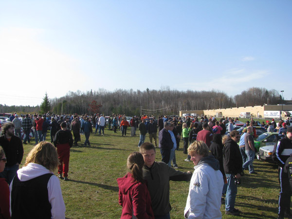
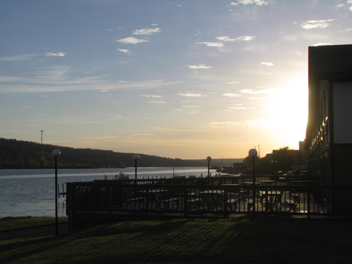
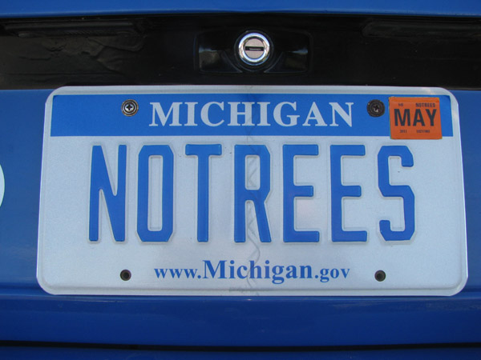
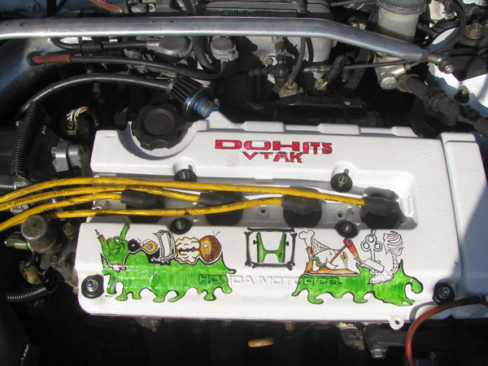

Parc Expose Interviews
Jim Cox, Driver, #558 Chevrolet S10
BB: Jim, you don't see too many rally trucks out there. What made you interested in rallying a pickup?
JC: I guess the "repairability" has made it something that's been affordable for us. We don't really run it for a performance advantage, but it's a good formula for us to have a good time.
BB: When was the last time you ran LSPR?
JC: I think '07 was my last LSPR.
BB: Do you have any goals or aspirations for the weekend?
JC: Having fun is always number one, which means finishing. As far as stage times, we're just going to go out, run our pace, and see what happens from there.
Jimmy Brandt, Co-Driver, #555 Ford Sierra
BB: Jimmy, how many times have you run this rally?
JB: Oh gosh, I don't remember how many times I've run it. I've been to every one since 1974, either as service, spectating, working or competing. I couldn't tell you how many times I've run it.
BB: What do you think of this Ford Sierra that you'll be riding in this weekend?
JB: It will be a neat car. I have not competed in it since it's had the V8 in it. I've run with Colin before when it had the turbo four in it, and that was a fun car, so this will be even funner.

Parc Expose at the Lake Superior Rally
Mike Merbach, Driver, #98 Volkswagen Jetta
BB: Tell me about this car. How long have you been running it?
MM: This is our third car. We generally run three years on a car and then we sell 'em. We have a lot more fun building them than we do maintaining them. This is the fourth event on this car, and it's my fourth year of owning it. We had a little hiatus.
BB: How many times have you run the Lake Superior Rally?
MM: Started in '99, ran it consecutively until 2006, took off '7, '8 and '9. We ran the "Mini" in there, they had a mini in the summer one year, and now we're back.
BB: What have been some of your favorite memories of the rally over the years?
MM: The sponsorship, the Auto Value Keweenaw people putting their hotdogs up at the delta, the water on Gratiot, the Mustang doing burnouts, the Himes family making a showing, the leaves on the trees... There's nothing better than Houghton.
BB: I see you have sponsorship from Stormy Kromer. What exactly is that?
MM: My home town is Kaukana, Wisconsin, and the hat with the string on the front was patented there. The hat was destined for obsolescence, and a gentleman in Iron River, Michigan purchased the rights and has been making the hats. We reached out and asked him for a sponsorship. We not only have a Made in America product, but we have a made in the U.P. product.
BB: You've obviously had a lot of experience on these roads. What are your favorite stages on the U.P.?
MM: My favorite stages, as sick as it sounds, are the rougher ones. Any time it's snowing, any time it's raining, any time it's rough, I enjoy it. So I'm looking forward to Bob Lake tonight, I haven't been on Far Point in a few years, and Herman has always got some really sneaky things on it, and I love it. I love it, I love it, I love it. It's the ultimate equalizer.
Doug Shepherd, Driver, #52 Dodge SRT 4
BB: I'm with legendary rally driver and co-driver Doug Shepherd. Doug, you've done this rally a time or two. What does the Lake Superior Rally mean to you?
DS: For me, the Lake Superior Rally started out as the Press on Regardless, and I've been involved in that rally since 1972. We've always thought of it as "The Big One." Coming up here, whether it's the Press on Regardless or the Lake Superior Rally, this is the one that you want to win and have on your resume.
BB: I saw some pictures this week on a social media site of some rather late-night work being done to this car. Can you elaborate as to what was happening there?
DS: We had a problem where the boost wasn't particularly good at low engine RPM, so we said gee we can't do anything internally, so we've got to change the turbocharger. We had the engine out Wednesday, found the problem inside the turbocharger, replaced it with a new unit, and now the car's running good. It was just a long day's work Wednesday, but plenty of time to get done and get up here.
BB: Like all of us, you've probably had some great times at POR and some bad times. What have been some of the POR, or as it's now known LSPR, moments that have stuck out in your mind?
DS: I guess I'd have to say that the first one, coming up here in 1978 with John Buffum. The rally that year started at noon like this one, although it ran until eight in the morning. It was a one-day event, 240 stage miles, we ran that in the TR-7. What a nice, long, hard 24 hours of work. It was awesome, the feeling at the end of the rally, to win, and to have accomplished all that.
BB: Do you have any particular favorite stages that you'll be running this weekend?
DS: I have a soft spot in my heart for three of them that we're going to run. I really love the Nestoria-Herman road, actually this year we're running it Herman to Nestoria, and it is just a technical, tricky stage that runs up over a ridgeline, then it's narrow. It's a great place to get in trouble, but it's also a great place to put a lot of time on guys. Menge Creek, that will be the fourth stage today, that's a downhill, twisty run, and it's absolutely awesome. It's been almost my personal favorite since 1973. Still, I have to say, Bob Lake, which is somewhere in the middle of the night, that is a road that's just so tricky. There's a two mile stretch in the center of it that's damp at times, it has some sudden corners over crests. I've had to push the car out of the woods and back on the road there a couple times in my career, as have many good drivers. Those three stages for me, I just love coming up here to do them, and the rest of the roads are awesome as well.
BB: Do you have any goals or aspirations for the weekend?
DS: What I try and tell everybody is that the first goal for the weekend is to avoid trouble at all costs. The second goal is to have fun, and the third goal is to see who we're racing and to try and win those individual battles. But we've got to make that Priority 3, because if you don’t make that Priority 3 you might fail at Priority 1.
BB: Who do you figure is your toughest competition this weekend?
DS: There's two cars starting ahead of us. Roman Pakos has a higher speed factor and is in a good Super Production car, so I expect him to really set the pace. Lauchlin is here, and he and I are drivers that run at, I think, about the same pace, and we have cars that I think are about exactly alike, so it ought to be fun to see what happens as we shake ourselves through the woods.

A beautiful morning on the Upper Peninsula of Michigan.
Chris O'Driscoll, Driver, #933 Honda CRX
BB: You came all the way out from Colorado. What brought you up to Michigan?
CO: The sweet roads, and everyone talking about how nice it was up here. We wanted to enjoy getting sideways in a different kind of terrain.
BB: You've never been out here before, then?
CO: Not to drive a car. I've been up here for racing mountain bikes years ago, but never in a car.
BB: Do you have any goals for the weekend?
CO: I'd say Goal One is to finish, and Goal 2 on top of that is to be on the podium.
Sean Murphy, Driver, #286 Volkswagen Golf
BB: Sean, you're about to start your first ever rally. What's going through your head right now?
SM: This is the first time that I've had a minute to think in the past month, the first minute of waiting and not preparing. It comes up real quick! I'm a little anxious, a little nervous, but keeping it under control.
BB: How has the whole putting the car together process been?
SM: I bought a used rally car, so it was more-or-less built. Just a pretty severe tune-up, replacing a few suspension components. It's still taken eight months, I can't imagine building one from scratch. It's one hell of a project!
BB: What have been some of the most difficult obstacles to overcome in getting ready for this day?
SM: I thought it was going to be the money, and that's tough, but it's the organization. It takes an unbelievable amount of organization, I didn't even know. This is my car, and I've paid for it all, but I've got these three other guys here right now and I couldn't be here without them. It's serious.
Silas Himes, Driver, #535 Honda Civic
BB: What are you looking forward to most about this weekend?
SH: Oh, finishing I suppose. If we get that far, that's good. Bringing the car home all in one piece on the trailer, having a nice time.
BB: How is the mighty Honda running for you these days?
SH: It's running OK, about as good as it ever was.
BB: You used to run a Nissan Sentra. How does that compare?
SH: Fragile
BB: Which are some of your favorite stages that you'll be running this weekend?
SH: Herman-Nestoria.
Matt Himes: I like Menge too!
Scott Sanford, Driver, #622 BMW 325i
BB: You don't see too many BMW's rallying in the US. How did you come up with this one, and how has it worked for you?
SS: I think there's a lot of misconceptions about parts costs on these cars. They're actually pretty cheap to maintain, and there are actually a lot of parts for them. They're pretty popular in road racing, so I thought "Why not give it a try in rally racing?"
BB: Have you been pleased with the results?
SS: Absolutely. The car's wonderful.
BB: You used to rally a front-drive car as I recall. What was that?
SS: Yeah, I actually navigated for my brother. We used to run a Cavalier, and we ran Group 2 for many years in CenDiv. That car got sold, and we moved on and I bought this one and started building it. We switched seats. I'm the owner and am driving the car and my brother's navigating. We're both kind of going to learn a bit from each other today, taking the different roles in the car, but we'll be good.
BB: How many times have you run the Lake Superior Rally?
SS: I've actually competed three times in Lake Superior in my brother's Cavalier. This will be the first time for this car. So this will be my fourth total.
BB: What have been some of your best and worst moments here?
SS: Some of my best moments? Brockway Mountain, which unfortunately we won't be able to drive today. The worst moment? We've never had a DNF, so I guess that's a good thing. And I'm hoping that today we don't have one. I think we'll be OK as long as we keep it out of the trees. As my license plate says, "NO TREES."

Mark Huebbe, Driver, #242 Volkswagen Beetle
BB: This is a very unusual rally car these days. Why did you decide to run an old Bug?
MH: My father had these back in the 70's when he was stationed out in California, and I just decided to run something that he was familiar with because he could help me work on the car. They were actually pretty successful over in Europe, club-wise, in the 60's up until about the early 70's. I just wanted something unique, something fun and rear-wheel-drive, and especially with the engine in the back, all the weight back there, I've got no problem with traction.
BB: What have you done in the way of performance modifications?
MH: I'm running a 2.2 liter motor, with dual Weber 48 IDF carburetors, a dry sump oil system, and I've got Bilstein shocks all around, fuel cell.
BB: Is this a paint scheme modeled after a historic rally car?
MH: Yeah, these are the Salzburg Porsche of Austria factory works cars that it's painted after, and all the livery on it.
BB: How many times have you run Lake Superior/POR?
MH: This is my first time.
BB: What are you looking forward to most about it?
MH: I don't know. I've only seen the roads when I filmed for some of the factory teams. I've never seen them at speed, so I just want to keep it on the road, but have a good time and set some reasonably fast times.

The valve cover of Cody Crane's Honda CRX